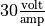
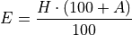

Optimization#
Find two positive numbers whose sum is 300 and whose product is a maximum.
Find two positive numbers whose product is 750 and for which the sum of one and 10 times the other is a minimum.
Box Volume Problem
You have a  sheet of cardboard on hand and you want to make a box with the largest possible volume. In order to create the box, you will cut an equal amount x from each corner and then fold the flaps. See figure below.
sheet of cardboard on hand and you want to make a box with the largest possible volume. In order to create the box, you will cut an equal amount x from each corner and then fold the flaps. See figure below.

Note

In order to maximize the volume, how many inches should you cut from each corner?
What are the dimensions of the box that has the maximum volume?
Box Cost Problem
To show your appreciation for the wealth of mathematical knowledge conferred upon you, you are planning to buy a custom-made box for Mr. Moore’s next birthday. The box will have a square base. The sides and bottom will be made out of mahogany, which costs 30 cents per square inch. The top will be made out of maple, which costs 50 cents per square inch. You have $60 to spend on the present and wants to get a box with the largest volume possible. What dimensions should the box be?
Can Problem
An aluminum soft drink can has a volume of cubic centimeters. In order to conserve resources, a soda company wants to minimize the amount of aluminum needed for a single can. What dimension should they make their cans?
The soda company realizes that they need to use stronger aluminum for the tops and bottoms of the cans, and this stronger aluminum costs 3 times as much as the aluminum used for the sides. If the company wants to minimize the cost of each can, what dimensions should the can be?
Fence Problem
A farmer has 40 feet of fencing, and he wants to fence off a rectangular pen next to his barn. The barn will be one side of the pen, so that side needs no fencing. In order for the cow to be able to turn around in the pen, the pen needs to be at least 5 feet long and 5 feet wide. What is the largest area the pen could have?
A Different Fence Problem
A fence 8 ft tall runs parallel to a tall building at a distance of 4 ft from the building. What is the length of the shortest ladder that will reach from the ground over the fence to the wall of the building?
Current Problem
When a critically damped RLC circuit is connected to a voltage source, the current I in the circuit varies with time according to the equation,

where V is the applied voltage, L is the inductance and R is the resistance, all of which are constant.
Suppose an RLC circuit with a resistance of  and an inductance of  is attached to a 12 voltage source. Find the maximum current that will occur in the circuit.
is attached to a 12 voltage source. Find the maximum current that will occur in the circuit.
League of Legends Problem
In League of Legends, a player’s Effective Health when defending against phsyical damage is given by,

where H is health and A is armor.
Health costs 2.5 gold per unit and Armor costs 18 gold per unit. You have 3600 gold, and you need to optimize the effectiveness of your health and armor to survive as long as possible against enemy team’s attack. How much of each should you buy?
River Problem
You are standing at the edge of a slow-moving river which is one mile wide and wish to return to your campground on the opposite side of the river. See figure below.

You can swim at 2 mph and walk at 3 mph. You must first swim across the river to any point on the opposite bank. From there walk to the campground, which is two miles from the point directly across the river from where you start your swim. What route will take the least amount of time?
Orchard Problem
There are 50 apple trees in an orchard. Each tree produces 800 apples. For each additional tree planted in the orchard, the output per tree drops by 10 apples. How many trees should be added to the existing orchard in order to maximize the total output of trees ?